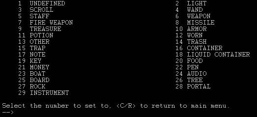

|
Building Objects For a complete walk-through, check out the Guide to Building on Havok: these pages are intended as quick-references.
VII.1: Intro to Objects Before moving on to objects, I highly recommend spending some quality time with your zone. Build a few rooms. Make sure you have the basics down. Get used to the commands and what you can do. If you want to plunge right in to learning how to build objects, be my guest. However, some people, especially those who are new to building, might have a hard time absorbing all the information at once, so taking it in chunks makes life a little easier. Anyway… As a builder, what you think of as an object will differ than that of a mortal’s point of view. We have a god’s-eye-view, so to speak, and we see all the little details. Nothing is hidden. To begin, type load o bread, which will load you a complimentary bread of the sort that every newbie mortal begins with. IMPORTANT: Whenever you sit down to create a new object, you must start with an existing object as a base. Every characteristic of an item is malleable, and so a sword can become a ring, and a shirt can become a battleaxe. However, certain specific items are bad choices for a base. Explaining the how and why of this can be complicated, and so I’ll save myself some typing and you some confusion by saying “Whenever you begin a new object, start with the complimentary bread!” …At least until you understand why I say this. You are guaranteed to have an item that can do everything you need it to do without messing anything up if you do it this way. Now, type cast ‘id’ bread. You’ll note that immortals have a more informative version of identify than mortals do. You can ignore the ‘R-number’ value. It’s basically meaningless for our purposes. The V-number is the virtual number, the vnum. This is important, because that number (in the case of the complimentary bread, the vnum is 12) is how the MUD refers to that item. You can load the same item by typing load o 12. Now, type stat bread. This will give you a lot more information than identify will, but it’s harder to understand until you go through and figure it all out. The stat command can be tricky to use. When you type ‘stat bread’, it searches for all the instances of ‘bread’ in the world at that time, and gives you the first one. The way it sorts the list and decides what is ‘first’ is not always intuitive, so always double-check to make sure you got the right one. In this case, you can check the vnum, or the short description, which gives the item away as our complimentary bread. We won’t go through all of what is listed there just now… you can undoubtedly figure a good deal of it out on your own. Instead, let’s get to building your first object. With your complimentary bread in hand, type oedit bread. It will bring up another VT100 terminal, this one designed for object building. VII.2: Step One: Name The first item in the object menu is the name. This section is for keywords that a player can type to use your item. If you wanted to have a long sword, I would name the item ‘sword long longsword’. You can have as many words in the name as you like, but they all have to fit on one line. Try to think of what players might be typing in and account for that. Note: It is a good idea to give the item a unique keyword. Try typing show o longsword, and you’ll see what I mean. Style Note: If a player types get sword and the MUD responds “You get the sword,” then ‘sword’ is the first keyword in the list. The first word of the object name is always the one that the MUD uses in such a situation. Keep this in mind, and try to make sure your first words will all make sense and read smoothly. It comes out strange if the player types get sword and the mud responds “You get the elvish.” VII.3: Step Two: Short Descriptions The short description is the text the MUD uses when it is describing an object in someone’s inventory or that is being used by someone. For instance, ‘a complimentary bread’ is the short desc for our base item. It should be something relatively short and to the point. Style Note: A short desc should not end with punctuation, nor should it start with a capitalized letter, unless the first word is a proper name.
VII.4: Step Three: Long Descriptions The long description is what you see when you look at an item on the ground. ‘A complimentary bread has been left here.’ is our base item’s long desc. Style Note: A long desc should be a complete, grammatical sentence. The first letter should be capitalized, and it should end with a puncuation mark. VII.5: Step Four: Item Types The item type defines what sort of item your item is. Is it a weapon? Food? Armor? This is a crucial category, and each item type has different object values, which is Step Twelve. Type 4 from the oedit main menu, and you’ll see this:

Here’s the lowdown on what all of these are: Undefined … No finished item should be undefined. Light … Item is a light-source. Scroll … Item is a magic scroll. Wand … Item is a magic wand. Staff … Item is a magic staff. Weapon … Item is a physical weapon. Fire weapon … Item is a weapon imbued with fire. Missile … Item is a ranged weapon, like an arrow or a throwing knife. Treasure … Item is worth money. When a player picks it up, it’ll be converted to gold coins. Armor … Item is wearable armor. Potion … Item is a magic potion. Worn … Item is wearable, but not armor, like a hat or a shirt. Other … Only in very rare circumstances should an item be Other. Trash … Item is useless. Trap … Item is a trap. It will damage players, and can be found and disarmed with find/disarm traps. Container … Item is a container, like a bag or a chest. Note … Item is a note. You should write something on it. Liquid Container … Item is a container for liquids, like a barrel or a cup. Key … Item is a key, used for unlocking locks (although an item does not have to be item type Key to unlock locks). Food … Item is food, it can be eaten. Money … Item is money, will be converted to gold coins when it is picked up. Pen … Item can be used to write on items of type Note. (I’m not sure if this actually works.) Boat … Item can be used to stay afloat in water. (I’m not sure if this actually works.) Audio … Item makes “noise”, displaying lines of text periodically to the room. Board … Item is a message board. Tree … Item is a druid tree. Rock … I have no idea what good a rock is. Portal … Item is a portal, transports players to another room. Instrument … Used by bards, this is useless until we put them in. VII.6: Step Five: Wear Positions A wear position defines where on one’s body one can wear a given item. Every item that is intended for a player to be able to pick up must have the take flag. If the item is a weapon, it must have the wield flag. Otherwise, most of these are pretty self-explainatory. Don’t make bizarre combinations. Style Note: To add some spice to your zone, add a few items like furniture, or a chandellier, or a staircase, or anything really, and make sure not to flag the take flag. You can use this to draw a player’s attention to a specific thing in the room, for instance, if you want them to notice and open a desk. These are nice too just for flavor though, with no real purpose. VII.7: Step Six: Extra Flags Most of these are fairly self-explainatory, so I’ll just make some special notes.
** If an item is glow or hum, a thief cannot use the sneak skill while wearing or keeping the item in his inventory. ** If an item is magic, a barbarian cannot pick up or use the item. ** If an item is nodrop, then it is cursed, and cannot be removed or dropped until a remove curse has been cast on it. ** If an item is anti-anything, then characters of that class or sex cannot use the item, unless an only-class flag is marked. ** If an item is only-class, then only the class or classes marked anti can use it. Example: A dagger is flagged anti-thief only-class. A single-classed thief can use this item. A ma/th cannot, nor can a wa/th, nor any other combination. If, however, the dagger is flagged anti-thief anti-warrior only-class, then a single-classed thief can use it, a single-classed warrior can use it, and a wa/th can use it. ** If an item is rare, then it gets counted towards the character’s rare limit when they rent out. ** If an item is quest, then that item is specifically used for static mob quests. Only use this if you have mobs who have been proc’ed specially for this purpose. VII.8: Step Seven: Weight This is, in pounds, how much the item weighs. Off the top of my head, I can’t remember how much a character of a given strength can lift, but I promise to look it up someday and write it here. VII.9: Step Eight: Value Value is how much the item is worth in-game. Characters can sell items to merchants, and I think the price they get is the value. Also, the value is used to determine how much the Super Repair Guy charges you to fix something. VII.10: Step Nine: Rent Cost This is the cost, in gold coins, that it takes to rent this item for one day. The minimum rent is 10,001 coins/day. VII.11: Step Ten: Extra Affects Extra affects are what you use to make your item do anything other than what is the standard. If you want to add save vs paralyze, you do it with an extra affect. If you want a food item to cast a spell on a player when s/he eats it, you do it with an extra affect (that’s called an eat spell) Each item can hold up to five extra affects, but most have none, and few have more than two or three. One common mistake is the difference between hit and hitroll. Hit is a bonus (or negative) to a character’s hitpoints, hitroll affects how well they can hit people with things. VII.12: Step Eleven: Object Values This section is seemingly the most complicated, but that’s just because there’s so many different types of object values. Each item type has several different values, so this list is very long. I wouldn’t bother reading through this except for reference sake. If you want to know what the different values of a specific item type are, you’ll find it right here. Note: As of this writing, I don’t know what all of these do, and it wasn’t obvious after tinkering with them. Since the code on this subject is Greek to me, I’ll have to wait till I can find one of the coders to explain them to me.
Type Object Values
Light … 1 – Color Values = ??? 2 - Type Values = ??? 3 – Hours Value is how many hours (ticks) the light will last. Scroll ... 1 – Level Value is the level the spell is cast at. 2 – Spell Value is the spell # of the spell that is cast note: Type “allspells” to get a complete list. 3 – Spell 2 Value is the second spell the scroll casts. 4 – Spell 3 Value is the third spell the scroll casts. Wand … 1 – Level Value is the level the wand casts at. 2 – Mana Cost Value is the amount of mana required to use the wand. 3 – Charges Value is the number of charges the wand has. 4 – Spell Value is the spell # the wand casts (see “allspells”) Staff … 1 – Level Value is the level the staff casts at. 2 – Mana Cost Value is the amount of mana required to use the staff. 3 – Charges Value is the number of charges the staff has. 4 – Spell Value is the spell # the staff casts (see “allspells”) Weapon … 1 – To-hit Value is the innate to-hit bonus of the weapon. 2 - # of die rolls Value is the number of times the damage die is rolled (i.e. Xd7) 3 - # sides on the damage die Value is the number of sides on the damage die (i.e. 3dX) 4 – Weapon Type Value is the type of damage the weapon deals. Fire Weapon … 1 – Strength Required Value is the strength required to wield the weapon. 2 – To-hit Value is the innate to-hit bonus of the weapon. 3 – Max Range/To-dam Value is the max range in rooms of the weapon, and the to-damage bonus. 4 – Weapon Type Value is the type of damage the weapon deals. Missile … 1 - % chance of breakage Value is the percent chance that the weapon will break. 2 – # sides on the damage die Value is the number of sides on the damage die (i.e. 3dX) 3 - # of die rolls Value is the number of times the damage die is rolled (i.e. Xd7) 4 – Weapon Type Value is the type of damage the weapon deals. Treasure … no values needed Armor … 1 – AC-Apply Value is the Armor Class Apply – read ‘help AC’ for info 2 – Full Strength Value is how many times the armor can be crushed before it gets destroyed. 3 – Armor Size This is how big the armor is. Potion … 1 – Spell Level What level the spell is cast at. 2 – First Spell The spell # of the first spell the potion casts (see ‘allspells’) 3 – Second Spell Spell # of the second spell the potion casts (see ‘allspells’) 4 – Third Spell Spell # of the third spell the potion casts (see ‘allspells’) Worn … no values needed Other … no values needed Trash … no values needed Trap … 1 – Damage Level The damage level of the trap. 2 – Damage Type The type of damage the trap deals. 3 – 80 Apparently this should be set to 80. 4 – Charges This is the number of charges the trap has. Container … 1 – Max Contents This is how many items can fit maximum. 2 – Locktype I don’t know what this does, I need to experiment. 3 – key# The vnum of the object that unlocks the container. 4 – Corpse? Is the container a corpse or no? Note … no values needed Liquid Container 1 – Max Amount The max amount of fluid the container can hold. 2 – Amount Left The amount of fluid the container starts with. 3 – Fluid Type The kind of fluid in the container. 4 – Poisoned? Is the liquid poisoned or no? Key 1 – Keytype I’m not sure this is necessary to set. Food … 1 – Amount filling This is how full you get (note: a player’s stomach is completely empty when it’s at 0, completely full when it’s at 20). Money … no values needed Pen … no values needed Boat … no values needed Audio … no values needed (Use ‘setsound’) Board … no values needed Tree … 1 – Tree Name This is the tree’s name (used for druid spells) Rock … no values needed Portal … 1 – To-room This is the vnum of the room the portal leads to. Instrument … 1 – Mana Reduction Value is the % reduction in mana cost while using it. VII.13: Step Twelve: Object Specials There are five different object specials:
Ego: (optional) Ego should be a level between 1 and 50. A character must be at least the Ego level in at least one of his classes to take and use this item. Speed: (required for weapons) Only use this for weapons. This determines how fast the weapon can be attacked with, thus modifying the character’s attacks per round. 0 is very slow, 100 is very fast. Loadrate: (optional) Loadrate determines what percentage of the time the item actually loads. 10 will make the item load 10% of the time, 100 will make it load all the time. Generally at Havok, we prefer items to load most of the time. If you really want something to not load very often, ask us. Tweak: (optional) Tweak gives an item some random variation in stats when it loads. If the tweak value is 5, then it will not tweak very much or often, 100 will make it tweak tons. Generally at Havok, we prefer items to have very low tweak rates, if any. Weapontype: (required for weapons) Weapontype determines what sort of weapon it is. There are sixty options, between 0 and 59. Here’s the list: VII.14: Step Thirteen: SAVE YOUR ITEM, FOR GODS’ SAKE! Type osave (itemname) (vnum) to save your new item. Itemname is any one of the keywords you assigned to your item. Vnum is the vnum that you want to save the item in. Note: If your item is a unique item – that is, if it only loads in one place, or is only carried by one mob – it’s kinda nice if you save the item with the same vnum as the room that it loads in. This isn’t necessary, but there are times when it’s nice, and it’ll save you a little time in the long run. Note: You should always destroy the original item. Always. The MUD remembers the item’s original vnum, and it thinks that it is the original item. Destory it and load yourself up a fresh one.
Page © 2004 Nathan Walker for HavokMUD
|